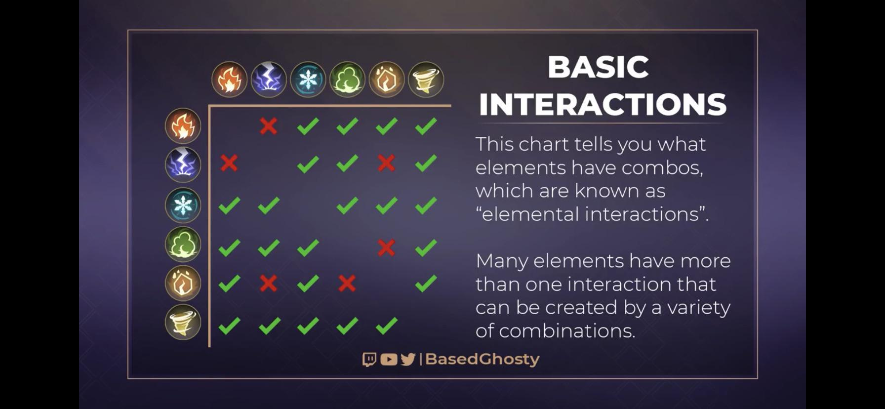

No spellbreak existe a mecânica de combinação mágica, nas quais podem ser destrutivas, construtivas ou neutras, podendo usa-las ao seu favor a fim de matar um inimigo mais facilmente ou se proteger dele.
Visto que esse módulo do guia possui muito texto, a imagem abaixo serve muito bem caso você não tenha interesse em ler tudo (para quem também não é muito bom em inglês na imagem diz que alguns elementos possuem mais de uma interação com outros elementos).

2 bolas de fogo ao se chocarem se destroem mutuamente. As bolas de fogo passam pela parede de fogo e não são afetadas. 2 paredes de fogo em contato não se afetam.
1 bola de fogo ao entrar em contato com um abalo sismico se destroe. 1 bola de fogo, ao entrar em contato com uma rocha, a encendeia. 1 parede de fogo ao ser transpassada por um abalo sismico, encendeia o abalo. 1 parede de fogo ao ser transpassada por uma rocha, a encendeia.
1 bola de fogo não é afetada por uma flecha de raio. 1 bola de fogo, quando atingida por um raio, é destruida. 1 parede de fogo não é afetada por uma flecha de raio. 1 parede de fogo não é afetada por um raio.
1 bola de fogo destrói um jato de tóxico, porém a bola de fogo permanece. 1 bola de fogo, ao entrar em contato com uma núvem tóxica, se combina em uma explosão (popularmente chamada de dragon fire). 1 parede de fogo, ao entrar em contato com um jato tóxico, se torna em fogo verde. 1 parede de fogo ao entrar em contato com uma núvem tóxica, torna a núvem em dragon fire, que consome o fogo tocado.
1 bola de fogo se destrói quando acerta uma flecha. 1 bola de fogo derrete 1 caminho de gelo (tornando em vapor). 1 bola de fogo é destroida pela tundra. 1 parede de fogo perde a chama que entrou em contato com a flecha ou com o caminho de gelo. 1 parede de fogo perde a(s) chama(s) que entrou(aram) em contato com a tundra.
1 bola de fogo é desviada após entrar em contato com uma navalha de vento. 1 bola de fogo é desviada pelo tornado, é consumida para criar um tornado de fogo. 1 parede de fogo é apagada quando é passada por uma navalha de vento. 1 chama da parede de fogo é consumida para criar um tornado de fogo.
1 abalo sísmico não é afetado por outro abalo. 1 abalo sísmico se destrói quando entra em contato com uma rocha. 1 pedra, quando entra em contato com outra pedra, é destruida.
1 abalo sísmico não é afetado por flechas de raio. 1 abalo sísmico vai ser parado quando atingido por 1 raio. 1 rocha não sofre nada após ser atingida por flechas de raio. 1 rocha pode ser destruida por um raio.
1 abalo sísmico não é afetado por um jato de tóxico. 1 abalo sísmico limpa poças de veneno. 1 abalo sísmico não é afetado por uma núvem tóxica. 1 rocha limpa o jato tóxico que esta em seu caminho. 1 rocha limpa poças de veneno. 1 rocha não é afetada pela núvem tóxica. 1 rocha limpa 1 bola de veneno impedindo que a mesma se exploda em núvem.
1 abalo sísmico é parado por uma flecha de gelo. 1 abalo sísmico acaba estilhaça o caminho de gelo que estiver em seu caminho. 1 abalo sísmico não é afetado pela tundra. 1 rocha é congelada por uma flecha. 1 rocha estilhaça 1 caminho de gelo. 1 rocha é congelada após passar pela tundra.
1 abalo sísmico não é afetado por uma navalha de vento. 1 abalo sísmico não é afetado por 1 tornado. 1 rocha é desviada quando acertada por uma navalha de vento. 1 rocha é desviada quando estiver perto de um tornado.
1 flecha de raio não é afetata por outra flecha de raio. 1 flecha de raio não é afetada por 1 raio. 1 raio não é afetado por outro raio.
1 flecha de raio não é afetado por um jato de tóxico. 1 flecha de raio eletrocuta uma poça tóxica. 1 flecha de raio eletrocuta uma núvem tóxica. 1 flecha de raio eletrocuta uma bola tóxica. 1 raio não é afetado por um jato tóxico. 1 raio eletrocuta 1 poça tóxica. 1 raio eletrocuta uma núvem tóxica. 1 raio eletrocuta uma bola tóxica.
1 flecha de raio não é afetada por uma flecha de gelo. 1 flecha de raio eletrocuta um caminho de gelo. 1 flecha de raio é destruida quando entra em contato com uma tundra. 1 raio não é afetado por 1 flecha. 1 raio eletrocuta um caminho de gelo. 1 raio não é afetado por uma tundra.
1 flecha de raio não é afetada por uma navalha de vento. 1 flecha elétrica eletrocuta um tornado. 1 raio não é afetado por uma navalha de vento. 1 raio eletrocuta um tornado.
1 jato tóxico não é afetado por outro. 1 poça tóxica não é afetada por um jato tóxico. 1 núvem tóxica não é afetada por um jato tóxico.
1 jato tóxico não é afetado por uma flecha de gelo. 1 jato tóxico envenena um caminho de gelo. 1 jato tóxico é congelado quando passa por uma tundra. 1 poça de veneno é congelada quando é atingida por uma flecha de gelo. 1 poça de veneno é congelada quando entra em contato com uma tundra. 1 núvem tóxica é congelada quando é atingida por uma flecha de gelo ou congela a pessoa que estiver dentro de seu alcançe e some. 1 núvem tóxica envenena um caminho de gelo. 1 núvem tóxica é congelada quando entra em contato com uma tundra. 1 bola de veneno gera uma núvem congelada quando é atingida por uma flecha. 1 bola de veneno gera uma poça de veneno quando é atinge um caminho de gelo. 1 bola de veneno gera uma núvem congelada quando entra em contato com uma tundra.
1 jato tóxico infecta uma navalha de vento. 1 jato tóxico envenena um tornado quando entra pelo meio. 1 jato tóxico é deviado de sua trajetória quando passa pelas extremidades de um tornado. 1 poça de veneno é espalhada pelo ar por uma navalha de vento. 1 poça de veneno não é afetada por um tornado. 1 núvem tóxica infecta uma navalha de vento e diminui de tamanho. 1 núvem tóxica infecta um tornado e some. 1 bola tóxica infecta uma navalha de vento. 1 bola tóxica infecta um tornado quando passa pelo meio dele. 1 bola tóxica é desviada por um tornado quando passa pelas extremidades.
1 flecha de gelo não é afetada por uma flecha de gelo. 1 flecha de gelo não afeta um caminho de gelo. 1 flecha de gelo não afeta uma poça tóxica congelada. 1 flecha recongela uma poça de água. 1 flecha de gelo não é afetada por uma tundra. 1 tundra não afeta uma tundra. 1 tundra não afeta um caminho de gelo. 1 tundra não afeta uma poça tóxica congelada. 1 tundra recongela uma poça de água.
1 flecha de gelo não é afetada por uma navalha de vento. 1 caminho de gelo é espalhado pelo ar por uma navalha de vento. 1 poça tóxica congelada é espalhada pelo ar por uma navalha de vento (só gelo). 1 caminho de gelo é espalhado pelo ar por uma navalha de vento. 1 poça de água é seca por uma navalha de vento. 1 tundra destroi uma navalha de vento. 1 flecha de gelo não é afetada por um tornado quando passa pelo meio (exceto em tornados de fogo). 1 flecha de gelo é desviada quando passa pelas extremidades de um tornado (exceto em tornados de fogo). 1 caminho de gelo não é afetado por um tornado. 1 poça tóxica congelada não é afetada por um tornado. 1 poça de água não é afetado por um tornado. 1 tundra não é afetada por um tornado.
1 navalha de vento não é afetada por outra navalha de vento. 1 navalha de vento não é afetada por um tornado. 1 tornado não é afetado por um tornado.
As lutas no Spellbreak requerem do jogador alguns requisitos para sobreviver até o final:
Uma boa mira é excencial em qualquer jogo por ai e no spellbreak não é diferente. Para treinar a sua mira você pode usar um software de treino como o Aimlab, o uso do Campo de treino (vá na seleção de modos de jogo e selecione o campo de treino) ou você pode ir treinando enquanto joga.
Embora pareça fácil requer prática e geralmente sem uma runa, você não é nada além de um alvo fácil, pois a esquiva não da conta de tudo. Também é válido ressaltar que saber para onde ir enquanto luta contra outra pessoa se trata de saber muito bem aonde está pisando (é sério, da pra cair do mapa e morrer), saber o que tem ao seu redor, um pouco de intuição e de sorte.
Busque sempre lootiar os locais por onde passa para ter certeza de que suas chances serão as melhores. (não se esquça, se você ja tem os 6 itens épicos, você precisa ir em direção de uma esfera de mana para conseguir itens melhores).
Sempre tenha cuidado e nunca subestime o seu inimigo, pois sem um talento, você morrerá na primeira vez em que o seu contador de vida chegar a 0. Se você acha que não dará conta de ninguém na partida, busque evitar confusões para se manter vivo.
Sempre observe o seu contador de vida, quanto mais vida você tem, mais chances você tem para derrotar o seu oponente.
Sua classe sempre lhe proporciona habilidades úteis para as batalhas, sempre tenha em mente de que deve usar todas.
Escapar de pessoas ou de suas magias pelos ares é uma ótima técnica, mas cuidado, ela tem seu preço.
O mais importante de todos, a mana, preste muita atenção em como você gasta ela, pois você precisará de 1 segundo pra recarregar ela e portanto ficará vulnerável.
Os colegas(duos o squads)
Sabe aquele ditado? "Uma andorinha só não faz verão". Então, por melhor que você seja, é sempre bom lembrar que se seu colega de equipe foi exilado, você tem mais chances de ganhar a partida o quanto antes você o revive-lo. Não se esqueça que você preisa esperar até entrar na próxima safe para revive-lo.